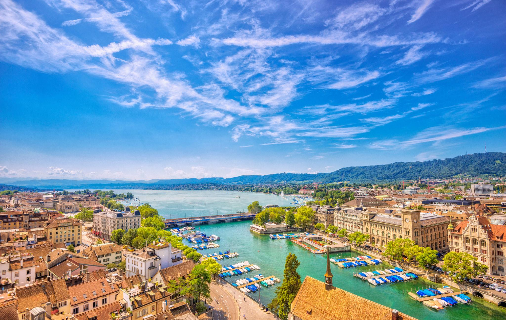
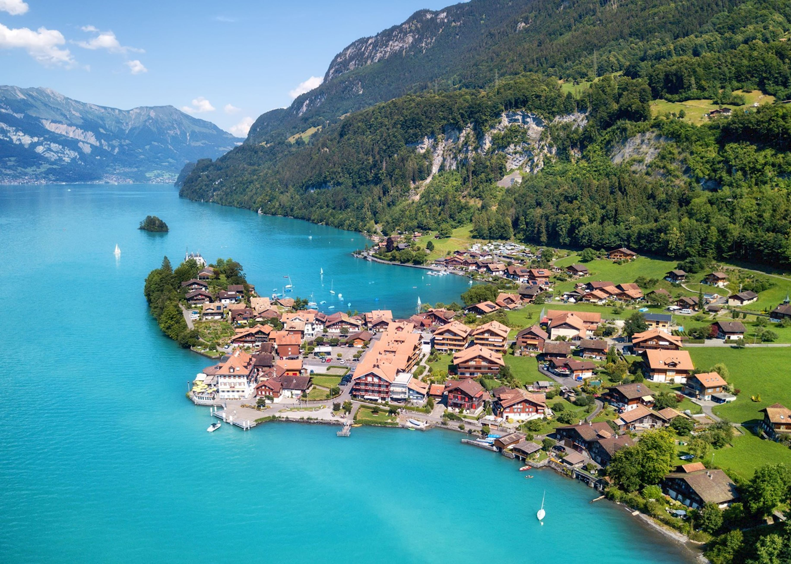
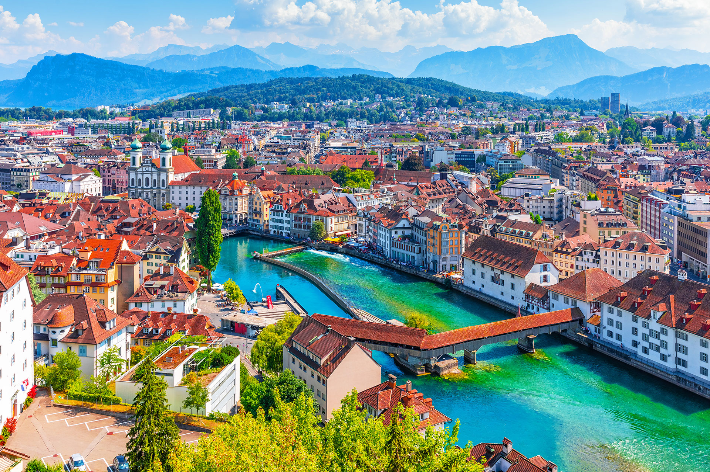
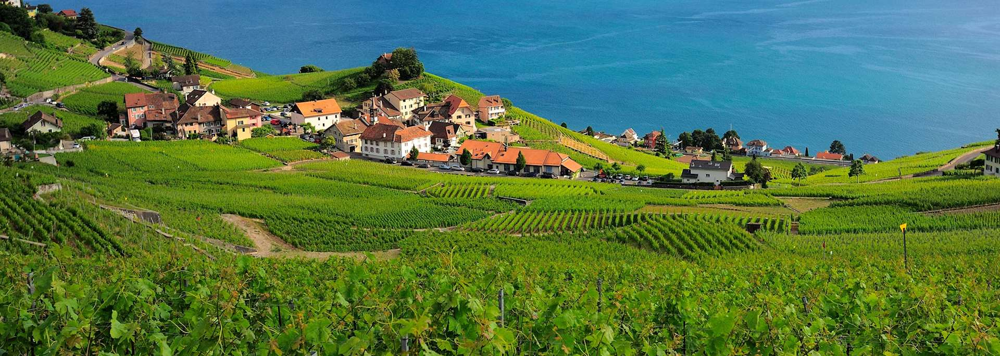
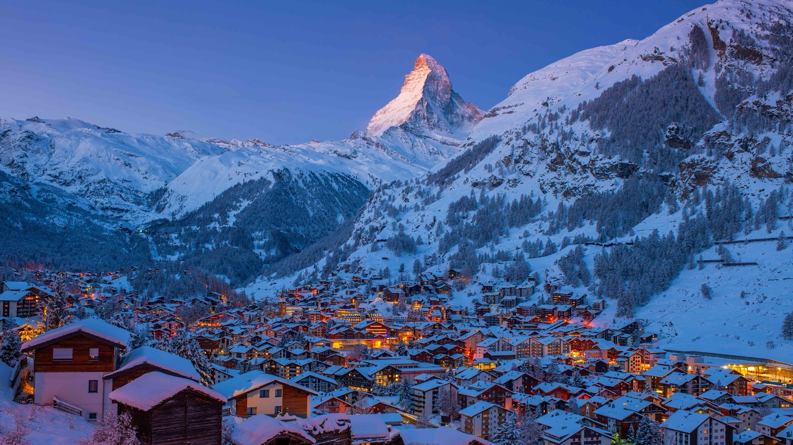

Zurich is where modern luxury meets natural beauty in the most effortless way. Imagine waking up to calm lake views, spending your day exploring elegant streets filled with cafes and shops, and ending it with a sunset by the water. Everything here feels clean, peaceful, and beautifully organized. Whether you love city life, shopping, culture, or nature escapes just minutes away, Zurich gives you the perfect experience in one place.

Interlaken is not just a destination — it’s an experience you will remember forever. Surrounded by snow-covered peaks, turquoise lakes, and endless green valleys, this is where adventure comes alive. You can fly over mountains while paragliding, cruise across crystal-clear lakes, or take scenic trains through breathtaking landscapes. Every moment here feels like a postcard you are actually living inside.

Lucerne feels like a dream you don’t want to wake up from. With its charming wooden bridges, peaceful lake, and snow-capped mountains in the background, every corner looks picture-perfect. You can stroll through the old town, enjoy calm boat rides, or simply sit by the lake and take in the beauty. Lucerne is the kind of place that makes you slow down and truly enjoy life.

Geneva welcomes you with a perfect mix of luxury, culture, and natural beauty. Walk along the stunning Lake Geneva, watch the famous Jet d’Eau rise into the sky, and explore stylish streets filled with cafes and boutiques. Just outside the city, you’ll find vineyards and mountain views waiting for you. Geneva is calm, classy, and unforgettable — perfect for a peaceful yet premium travel experience.

Zermatt is where nature shows its most powerful beauty. At the foot of the iconic Matterhorn, you are surrounded by towering peaks, fresh alpine air, and silent snowy landscapes. No cars, no noise — just pure mountain peace. Whether you are skiing in winter or hiking in summer, every view feels unreal. Zermatt is not just a place you visit — it’s a place you feel deeply.